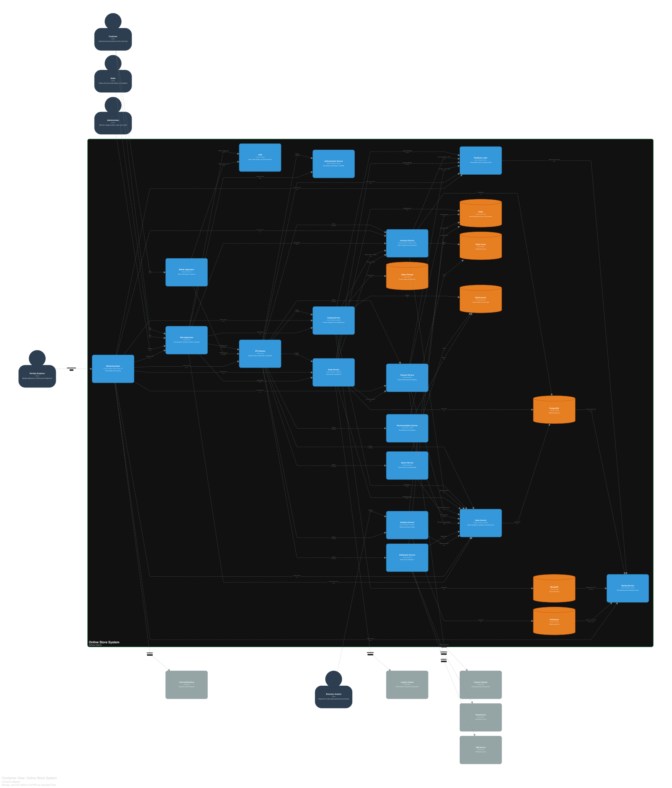

دیدگاه کانتینرها¶
نمای کلی¶
در این دیدگاه، سامانه به مجموعهای از کانتینرهای اجرایی شامل سرویسها، پایگاههای داده، حافظههای نهان و دیگر مؤلفههای قابل استقرار تجزیه میشود.
هر کانتینر، یک واحد قابل استقرار مجزا است که میتواند به صورت مستقل اجرا و مقیاسپذیر شود. این دیدگاه، دومین سطح از مدلسازی C4 را تشکیل میدهد و ارتباطات بین کانتینرها را به تصویر میکشد.
نمودار کانتینرها¶

نمودار ۲: دیدگاه کانتینرهای سامانه فروشگاه اینترنتی
تحلیل کامل نمودار کانتینرها¶
سامانه فروشگاه اینترنتی از بیست و دو کانتینر اصلی تشکیل شده است که در ادامه به تفکیک دستهبندی و تشریح میشوند.
برنامههای کاربردی و رابطهای کاربری¶
| کانتینر | مسئولیت | فناوری |
|---|---|---|
| برنامه وب | رابط کاربری برای مشتریان، مدیران و فروشندگان | Next.js |
| برنامه موبایل | برنامه بومی برای مشتریان | React Native |
| شبکه توزیع محتوا | توزیع محتوای ایستا و محافظت در برابر حملات انکار سرویس | Cloudflare |
زیرساخت ارتباطی و امنیت¶
| کانتینر | مسئولیت | فناوری |
|---|---|---|
| دروازه رابط برنامهنویسی | مسیریابی درخواست، احراز هویت، محدودیت نرخ | Kong |
| سرویس احراز هویت | مدیریت هویت، احراز هویت و کنترل دسترسی مبتنی بر نقش | Spring Boot + Keycloak |
| لایه مقاومسازی | قطعکننده مدار، تکرار و محدودیت نرخ | Resilience4J + Istio |
سرویسهای حوزه کسبوکار¶
| کانتینر | مسئولیت | فناوری |
|---|---|---|
| سرویس کاتالوگ | مدیریت محصولات و دستهبندیها | Spring Boot + MongoDB |
| سرویس موجودی | مدیریت موجودی و رزرو | Spring Boot + PostgreSQL + Redis |
| سرویس سفارش | مدیریت چرخه حیات سفارشات | Spring Boot + PostgreSQL |
| سرویس پرداخت | پردازش پرداخت و یکپارچهسازی | Spring Boot |
| سرویس فروشنده | مدیریت، تأیید و عملکرد فروشندگان | Spring Boot + PostgreSQL |
سرویسهای پشتیبانی و تحلیل¶
| کانتینر | مسئولیت | فناوری |
|---|---|---|
| سرویس جستجو | جستجوی متن کامل و تکمیل خودکار | Elasticsearch |
| سرویس توصیهگر | توصیههای شخصیسازیشده | Python + FastAPI |
| سرویس اطلاعرسانی | اطلاعرسانی چندکاناله | Spring Boot |
| سرویس تحلیل | گزارشدهی و تحلیل داده | Spring Boot + ClickHouse |
| سرویس پشتیبانگیری | پشتیبانگیری خودکار و بازیابی در شرایط فاجعه | Spring Boot + AWS S3 |
زیرساخت داده و پایش¶
| کانتینر | مسئولیت | فناوری |
|---|---|---|
| کافکا | پخش رویداد و ارتباطات ناهمگام | Apache Kafka |
| حافظه نهان | حافظه نهان توزیعشده | Redis |
| پایگاه داده اسنادمحور | ذخیرهسازی دادههای محصولات | MongoDB |
| موتور جستجو | جستجوی متن کامل و ذخیرهسازی لاگ | Elasticsearch |
| ذخیرهسازی اشیاء | ذخیرهسازی تصاویر و فایلهای ایستا | MinIO |
| پایگاه داده رابطای | ذخیرهسازی دادههای تراکنشی | PostgreSQL |
| پایگاه داده تحلیلی | ذخیرهسازی دادههای تحلیلی | ClickHouse |
| پشته پایش | مشاهدهپذیری و پایش | Prometheus + Grafana + Jaeger + ELK |
الگوی ارتباطی کانتینرها¶
ارتباطات بین کانتینرها از دو الگوی اصلی پیروی میکند:
ارتباطات همگام¶
ارتباطات همگام از طریق رابط برنامهنویسی RESTful با پروتکل HTTPS انجام میشود. این نوع ارتباط برای درخواستهایی استفاده میشود که نیاز به پاسخ فوری دارند.
مسیرهای اصلی ارتباطات همگام:
| مبدأ | مقصد | پروتکل | کاربرد |
|---|---|---|---|
| برنامه وب | دروازه رابط برنامهنویسی | HTTPS/REST | فراخوانی رابطهای برنامهنویسی |
| برنامه موبایل | دروازه رابط برنامهنویسی | HTTPS/REST | فراخوانی رابطهای برنامهنویسی |
| دروازه رابط برنامهنویسی | سرویس احراز هویت | HTTPS/REST | مسیریابی درخواستهای احراز هویت |
| دروازه رابط برنامهنویسی | سرویس کاتالوگ | HTTPS/REST | مسیریابی درخواستهای کاتالوگ |
| دروازه رابط برنامهنویسی | سرویس موجودی | HTTPS/REST | مسیریابی درخواستهای موجودی |
| دروازه رابط برنامهنویسی | سرویس سفارش | HTTPS/REST | مسیریابی درخواستهای سفارش |
| دروازه رابط برنامهنویسی | سرویس پرداخت | HTTPS/REST | مسیریابی درخواستهای پرداخت |
| دروازه رابط برنامهنویسی | سرویس فروشنده | HTTPS/REST | مسیریابی درخواستهای فروشنده |
| دروازه رابط برنامهنویسی | سرویس جستجو | HTTPS/REST | مسیریابی درخواستهای جستجو |
| دروازه رابط برنامهنویسی | سرویس توصیهگر | HTTPS/REST | مسیریابی درخواستهای توصیهگر |
| دروازه رابط برنامهنویسی | سرویس اطلاعرسانی | HTTPS/REST | مسیریابی درخواستهای اطلاعرسانی |
| دروازه رابط برنامهنویسی | سرویس تحلیل | HTTPS/REST | مسیریابی درخواستهای تحلیل |
ارتباطات ناهمگام¶
ارتباطات ناهمگام از طریق آپاچی کافکا انجام میشود. این نوع ارتباط برای رویدادهایی استفاده میشود که نیازی به پاسخ فوری ندارند.
مسیرهای اصلی ارتباطات ناهمگام:
| مبدأ | مقصد | رویداد | کاربرد |
|---|---|---|---|
| سرویس سفارش | کافکا | سفارش_ایجاد_شد | انتشار رویداد سفارش جدید |
| سرویس پرداخت | کافکا | پرداخت_موفق | انتشار رویداد پرداخت موفق |
| سرویس موجودی | کافکا | موجودی_تغییر_کرد | انتشار رویداد تغییر موجودی |
| سرویس کاتالوگ | کافکا | محصول_جدید | انتشار رویداد محصول جدید |
| کافکا | سرویس اطلاعرسانی | سفارش_ایجاد_شد | مصرف رویداد برای اطلاعرسانی |
| کافکا | سرویس تحلیل | تمام رویدادها | مصرف رویدادها برای تحلیل |
الگوی دسترسی کاربران¶
تمامی کاربران از طریق برنامه وب یا برنامه موبایل به سامانه دسترسی دارند.
-
کاربران از طریق برنامه وب یا برنامه موبایل به سامانه متصل میشوند.
-
برنامه وب و برنامه موبایل، محتوای ایستا را از شبکه توزیع محتوا دریافت میکنند.
-
برنامه وب و برنامه موبایل، درخواستهای خود را به دروازه رابط برنامهنویسی ارسال میکنند.
-
دروازه رابط برنامهنویسی، درخواست را پس از احراز هویت و اعمال محدودیت نرخ، به سرویس مناسب مسیریابی میکند.
-
هر سرویس، دادههای مورد نیاز خود را از پایگاههای داده مربوطه دریافت یا ذخیره میکند.
-
سرویسها در صورت نیاز، رویدادهایی را در کافکا منتشر میکنند.
-
سایر سرویسها، رویدادهای مرتبط را از کافکا مصرف کرده و اقدامات لازم را انجام میدهند.
-
سرویسها برای افزایش کارایی، از حافظه نهان توزیعشده استفاده میکنند.
پانویسها¶
¹ واحد قابل استقرار مجزا در معماری نرمافزار که میتواند به صورت مستقل اجرا و مقیاسپذیر شود. هر کانتینر شامل کد برنامه و تمام وابستگیهای آن است.
² رابطی برای ارتباط بین سرویسها که از پروتکل HTTP و روشهای استاندارد مانند GET، POST، PUT و DELETE استفاده میکند.
³ سامانهای توزیعشده برای پخش رویداد و پیامرسانی با توان عملیاتی بالا، تحملپذیری خطا و تضمین ترتیب پیامها.
⁴ سامانهای برای ذخیرهسازی موقت دادهها با کارایی بالا که به عنوان لایه کشینگ بین سرویسها و پایگاه داده اصلی قرار میگیرد.
⁵ رویکردی در ذخیرهسازی دادهها که از ساختار سندمحور برای ذخیرهسازی دادههای نیمهساختاریافته استفاده میکند.
⁶ موتور جستجوی متنباز که قابلیت جستجوی متن کامل، تحلیل و ذخیرهسازی دادههای حجیم را فراهم میکند.
⁷ سامانهای برای ذخیرهسازی اشیاء مانند تصاویر، ویدئوها و فایلهای ایستا با قابلیت دسترسی از طریق رابط S3.
⁸ پایگاه داده رابطای که از تراکنشهای اسیدی و یکپارچگی ارجاعی پشتیبانی میکند.
⁹ پایگاه داده ستونگرا که برای اجرای کوئریهای تحلیلی روی دادههای حجیم بهینهسازی شده است.
¹⁰ مجموعهای از ابزارها برای پایش، مشاهدهپذیری و تحلیل عملکرد سامانه شامل جمعآوری معیارها، ردیابی توزیعشده و تجمیع لاگ.